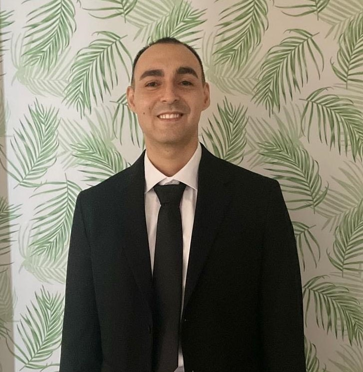

Francisco Lovera
>
Summary
A passionate and driven Computer Sceince Major with a strong foundation in programming and problem solving.
I strive to continuously improve my skills and contribute to meaningful projects. Whether it’s designing efficient algorithms using
object-oriented programming, or collaborating on projects, I bring focus and determination to every challenge.
As I take the next step in my career, I am excited to apply my knowledge and grow professionally.
Education
- Miami-Dade College: Associate in Engineering Program
May 2023
- Florida International University: Bachelor's in Computer Science
June 2023 - Present
Work Experience
AC Hotel Miami Beach - Marriott International
Bartender/Server/Front Desk
- Studied and memorized various cocktail and custom recipes, dozens of local beers and wines in order to give
quality recommendations to guests.
-
Handled and processed $3,000+ in transactions per shift including credit, debit, and cash payments.
-
Employed upselling techniques increasing revenue of each individual sale by an average of 50%
-
Organized accommodation of over 150+ guests with check ins and check outs.
-
Planned and completed quarterly and annual audits for brand standard and financial. Processing orders and paying
invoices for liquor, Pepsi, Vistar, Tradavo, US Foods, and etc. Planned with organized groups and contracted sales.
Skills
- Programming Languages: | Java | Python | C++ |
-
Web: | HTML | CSS | Bootstrap | JQuery |
-
Data Structures
-
Team Leadership
-
Computer Operating Systems
Contact Information
About Me